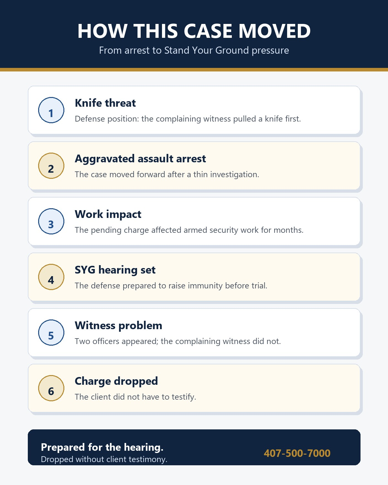
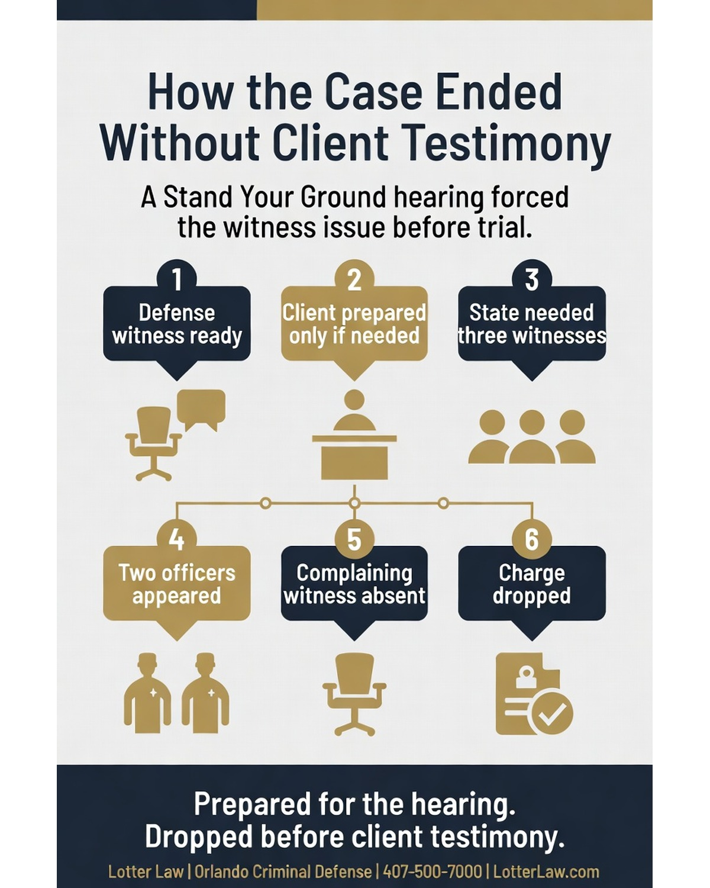

USCCA Member's Aggravated Assault Case Dropped After Stand Your Ground Preparation
A USCCA member who worked as an armed security guard was arrested for aggravated assault after a man pulled a knife on him and then denied it. Months later, when we appeared for the Stand Your Ground hearing, the State dropped the case without my client ever having to take the stand.
This case shows why Florida's self-defense immunity law matters. A person can do what he believes is necessary to protect himself, still get arrested after a thin investigation, and then spend months living with the consequences while the case works its way toward a hearing.
For this client, the consequences were immediate. Because he worked in armed security, the pending aggravated assault charge affected his ability to work in that field while the case was open. The criminal case was not just a court problem. It touched his livelihood.
That is one reason self-defense cases need to move with purpose. A felony charge can sideline someone long before there is a trial, a plea, or a conviction. For an armed security guard, the accusation itself can interfere with the ability to carry, accept assignments, satisfy an employer, or keep professional credentials in good standing. Even when the client is ultimately vindicated, the months in between can cause real financial pressure.
That pressure is part of the case. It affects decision-making. It affects whether a client feels forced to accept a bad offer just to get back to work. It also shows why a pretrial immunity strategy matters: the faster the defense can put the self-defense issue in front of the State and the court, the less time the accusation has to become its own punishment.

The Arrest: A Knife Threat Becomes an Aggravated Assault Charge
The client was a USCCA member and an armed security guard. During the incident, a man who appeared impaired and aggressive pulled a knife on him. The defense position was straightforward: this was a self-defense situation, not a crime.
The problem was what happened next. The man denied pulling the knife, and the police investigation did not adequately test that claim before arresting my client. Instead of treating the knife threat as the central fact, the case moved forward as an aggravated assault allegation against the person who had been threatened.
Why That Matters
In my view, this is exactly the sort of case Florida's Stand Your Ground immunity statute is supposed to screen before trial. When the evidence supports self-defense, the defendant should not have to wait for a jury trial to ask whether the prosecution should continue at all.
What the State Had to Prove
Aggravated assault is defined in F.S. 784.021. It generally requires an assault with a deadly weapon without intent to kill, or an assault committed with intent to commit a felony. It is a third-degree felony.
But the aggravated assault statute is only half the story. Florida also recognizes that a person may lawfully use or threaten force in defense of himself or another. Under F.S. 776.012, a person may be justified in using or threatening force when he reasonably believes it is necessary to defend against another person's imminent unlawful force. When deadly force is involved, the statute focuses on imminent death, great bodily harm, or a forcible felony.
That distinction mattered here. The defense was not that nothing serious happened. The defense was that the serious thing was the knife threat, and my client's response had to be judged in that context.
Why the Stand Your Ground Hearing Changed the Case
A Stand Your Ground immunity hearing is different from simply telling a jury, "I acted in self-defense." Under F.S. 776.032, a person who lawfully uses or threatens force may be immune from criminal prosecution. The statute also says that once a prima facie immunity claim is raised at a pretrial hearing, the burden is on the party seeking to overcome immunity to prove its position by clear and convincing evidence.
Practically, that means the State has to be ready to do more than rely on the arrest narrative. The State has to be ready to answer the self-defense evidence before trial.
The Hearing Forced the Right Questions
- Was there a knife? The defense position was that the alleged victim pulled one first.
- Was the investigation complete? The arrest decision did not fully account for the self-defense claim.
- Could the defense establish the immunity claim without the client? We had a witness prepared to establish the key facts without putting my client on the stand.
- Could the State overcome immunity? The State needed its own witnesses, including the complaining witness, to try to overcome the Stand Your Ground claim.
When we appeared in court for the Stand Your Ground hearing, my client was prepared to testify if he had to. But that was not the plan unless it became necessary. We had another witness who could establish the defense theory without exposing the client to cross-examination.
Why Not Testifying Mattered
People sometimes assume that a self-defense case has to be won by putting the accused person on the stand and having him tell the judge or jury what happened. Sometimes that is necessary. But if the defense can establish the Stand Your Ground claim through another witness, that can be the cleaner path.
Testifying under oath creates risk. The prosecutor gets to cross-examine. Prior statements can be picked apart. A client who is nervous, angry, or simply not used to public testimony can be made to sound less clear than the facts actually are. In this case, we were ready for my client to testify if our witness did not meet the need. But the defense was built so he did not have to be the first option.
That mattered even more because the State had a witness problem of its own. The State needed three witnesses to try to overcome our Stand Your Ground claim. Two officers appeared. The complaining witness did not. Without that witness, the State could not move forward the way it needed to, and the charge was dropped.

How the USCCA Process Helped
I have been vetted by USCCA and listed as one of its Critical Response Attorneys. In a real self-defense case, that matters because the client does not just need someone who understands criminal procedure. He needs someone who understands firearms, force decisions, police investigations, and the way a self-defense claim has to be presented before the case hardens around the first police report.
The process for this client was straightforward. He was a USCCA member, the case was connected with counsel, and we were able to prepare the defense without turning the case into a financial guessing game for him. USCCA materials describe the Critical Response Team as available to members 24/7/365 and able to help connect members with a self-defense attorney from the USCCA Attorney Network.
That did not make the criminal case disappear overnight. It still took several months. During that time, the pending charge affected his ability to work in armed security. But the process gave him a path: appear in court, pursue immunity, and force the State to confront the self-defense issue before trial.
The Result: One Court Appearance, No Testimony, Case Dropped
The client appeared in court one time for the Stand Your Ground hearing. Our defense witness was ready. My client was ready if needed. The State had two officers present, but the complaining witness failed to appear. The aggravated assault charge was dropped without my client having to testify.
That outcome matters because a self-defense case is not only about avoiding a conviction. It is also about avoiding the process becoming the punishment. For someone whose career depends on being able to work armed security, months under a felony accusation can be devastating even before a jury ever hears the case.
This result does not mean every self-defense case will end the same way. It does show why early preparation matters, why Stand Your Ground immunity can be so important, and why a USCCA member should take the emergency response process seriously from the beginning.
USCCA Member Charged After Defending Yourself?
If you are facing an aggravated assault, firearm, or self-defense-related charge in Central Florida, get counsel involved early. The facts that matter most can disappear quickly.
Call (407) 500-7000 for a free consultation.
Prior results do not guarantee future outcomes. Every case depends on its own facts, evidence, witnesses, and procedural posture. This post discusses an anonymized case result for educational purposes.
Legal References
Related Articles
USCCA Critical Response Attorney in Orlando
What it means to work with a vetted USCCA Critical Response Attorney after a Florida self-defense incident or weapons-related arrest.
Self-DefenseStand Your Ground vs. C4 Motion to Dismiss
Why Florida's Stand Your Ground immunity hearing is different from an ordinary motion to dismiss.
Aggravated AssaultAggravated Assault in Florida
The elements, penalties, and defenses that apply to aggravated assault charges under Florida law.

Jeff Lotter
Criminal Defense Attorney | Former State Trooper | USCCA Critical Response Attorney
Jeff Lotter is an Orlando criminal defense attorney and former Florida Highway Patrol trooper. He defends clients facing DUI, criminal traffic, firearm, assault, and self-defense-related charges throughout Central Florida.